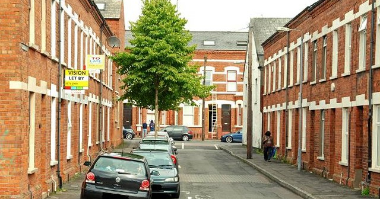

Hollylands
Guide: It's nice to see so many of you here. I'm going to tell you something about Hollylands - our facilities and activities, and the exhibitions we have coming up. I hope you'll find it interesting and bring your pupils along. For most of what we have to offer here, you can just turn up with your party. I'm pleased to say that recent work has meant that the whole centre is prepared for blind visitors (D). There are a couple of activities where we ask you to book a week in advance. We only have artists that you can watch painting (C) at certain times, so we need notice of your coming for that.
The other activity requiring at least 7 days' notice is the drama workshop (A) - again, it's a question of organising the staff at this end. But the video you work yourself (E), and so that's available any time. Another activity where you need to think ahead is the garden sculpture experience (B), but that's a question of the weather, which of course we can't control.
Speaking of weather, we run a reduced range of facilities in the winter months. While the cafe (C) and the shop (E) provide welcome shelter from the cold and rain, I'm afraid our artist in residence scheme (B) isn't run in the winter, so the studio is closed then. And the animals in the mini zoo (D) are kept indoors for warmth during the cold months, so that doesn't operate either. The adventure playground (A) does - though make sure the children are wrapped up well!
OK, now we run a programme of exhibitions through the year, so I'll tell you about the next few. Our current exhibition, Local Lives, ends on 26th August, and then one called History in Pictures starts on 28th August. This includes all sorts of objects and experiences from the past, such as farm machinery and some cars. We're sure children will love the chance to have a ride on an old bus.
This includes all sorts of objects and experiences from the past, such as farm machinery and some cars. We're sure children will love the chance to have a ride on an old bus. Next, we're running a show called People at Work, and this will open on 19" September.
There will be pictures and videos depicting all sorts of jobs, from coal mining to flying planes. And there's a careers advice service available for everyone to consult.
Following on from that show, we're putting on an exhibition called Land from Air.
This starts on 11th November and includes hundreds of aerial photographs. A competition accompanies the show, with the exciting prize of a balloon trip for two. So, we hope to see you at at least one of the exhibitions.
Now, the area occupied by Hollylands is rather large, and we don't want people to get lost, so I'll just give you a few pointers to help you orientate yourselves. So, whether you come by car or bicycle, you'll come in from the road. Cars then park to the left, through the gates into the car park, and bikes (A) to the right, through the gates opposite. Cyclists in particular might be feeling thirsty at this point, and you can get a drink from the machine at the end of the bike park, halfway to the museum entrance.

Note: You hear about 'a drink from a machine', and you hear that this is 'halfway to the museum entrance'. B must be the answer for Question 8. There is also information about option A, which could help you, although the answer doesn't depend on this.
You can enjoy your drink in the picnic area, which is opposite the car park. For anyone who doesn't have a mobile phone, there are payphones at the far end of the picnic area.

Over at the opposite end of the picnic area, across the path, are the toilets (G). Next to them, and just to the right of the entrance to the main museum, is the first aid room, which we hope you won't need, but it's there in case you do.

If you have any queries, please go to the manager's office (D), which is behind the picnic area. And, last but not least, you'll need to buy your tickets or show your group pass to the ticket office (F) on the left of the museum entrance. OK, I'll pause there - are there any questions at this point?